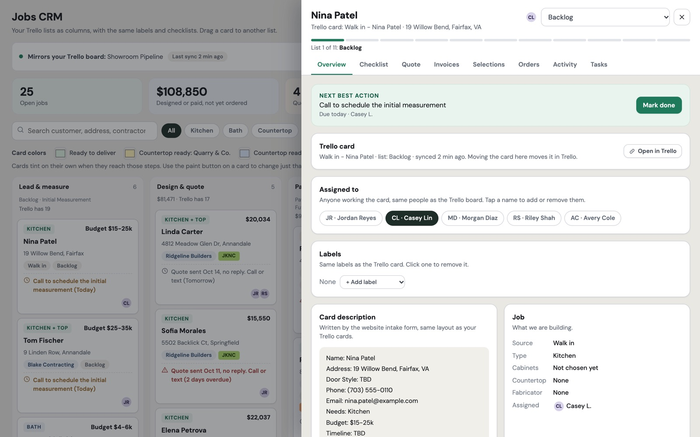

01 — Pipeline
Every job, at a glance
Jobs move through lanes that match the shop: lead and measure, design and quote, paid and ordered, assemble and deliver, install, complete. Each card shows the customer, value, contractor, supplier and the next thing that needs doing. The board stays in sync with the Trello board the team already used, so nobody had to switch tools overnight.
